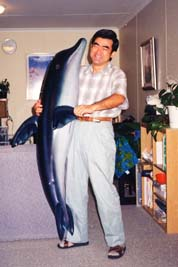

７８．「オーストラリア郵便局のくじ引きにあたった」(オーストラリア、写真有)
外国に行って、特に仕事で行った場合で、誰でも一番苦手なのは電話である。こちらから電話をかける場合は事前に
何をどうしゃべるかを簡単にまとめてから電話をするので何とかなる。が、電話を受けるというのは結構大変である、
何が大変かというと用件が直ぐに分からないから理解するのに時間がかかるのである。
オーストラリア、ポートヘドランドに赴任して１年経った頃の話である。オーストラリアの郵便局は逞しく記念切手
をしょっちゅう販売している。また移住民もアジア各国から来ている関係で特に中国にまつわる記念切手も販売されて
いる。ある日切手を求めて郵便局に行ったら、イルカのバルーンが飾ってありイルカの記念切手を販売していた。少し
多めに必要だったので沢山買ったら、何か抽選があるらしく紙に住所氏名を書いて７枚位提出した。
こんな事をすっかり忘れていたある日、郵便局から自宅に電話があった。家内は電話を受けたが何の話かてんで分か
らない。分かったのは郵便局からというだけである。私が帰宅したら電話をかけ直すと何とか伝えて電話を切った。私
が４時半に帰宅したら、この件の連絡を受けて郵便局に電話をした。この時もまだ私は抽選券の事を思い出していなか
った。

郵便局に電話をして、こちらの名前を伝え誰かが私に電話をくれたが何の用だったの聞いた。早口で「イルカのバル
ーンの抽選で当たった」と言ってきた。こちらもすらすら話せるわけではないのでどうしたら良いのかだけを聞いて取
りに行った。赴任して丁度１年目の記念日にイルカのバルーンを記念にもらって来た。
さて、後日談でシャロー（家内の英会話の先生）が同じくイルカのバルーンを狙っていたらしい。抽選発表の日に彼
女は郵便局に誰に当たったか聞いたらしい。郵便局員は日本人で英語の出来ない奥さんが電話に出て説明が大変だった
と言ったらしい。シャローはそれを聞いて、日本人女性は私の生徒で会話が上手くできなかったので恥ずかしいと郵便
局員に思わずもらした様である。ポートヘドランドに当時日本人は二家族だけで多くの人たちは我々の存在と顔を知っ
ていた。
２００１年１０月 ７日 記
|